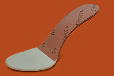
Ogni sottopiede parte dalla forma del modello.
Sottopiedi per i calzaturifici, a Villatora di Saonara dal 1970.
Via Irpinia 15. Per ritiri e consegne chiamate prima di passare.
I nostri sottopiedi
- Materiali
- Cuoio, schiuma di lattice, pelle, gommapiuma, lana, tessuto sintetico e antibatterico. Da uomo, da donna e da bambino.
- Non solo sottopiedi
- Tagliamo anche suole, puntali, contrafforti e tallonette, su cellulosico accoppiato, cartone fibrato, pelle e cuoio.
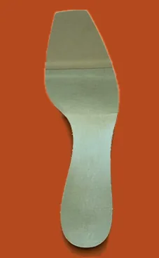
01Chiedete il sottopiede: Con Ocram schiuma e puntina in Texon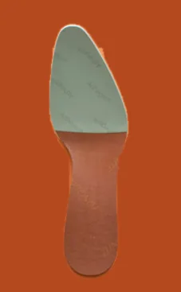
02Chiedete il sottopiede: Con Adhegel traspirante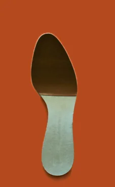
03Chiedete il sottopiede: Con tessuto sintetico in pianta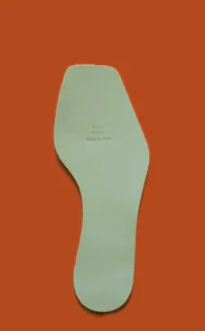
04Chiedete il sottopiede: In vero cuoio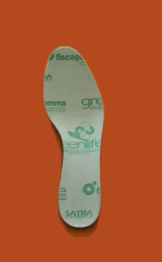
05Chiedete il sottopiede: Con antibatterico Greenlife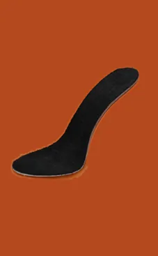
06Chiedete il sottopiede: Con lana intera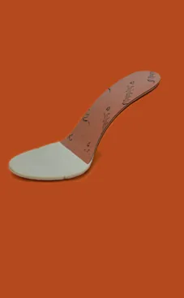
07Chiedete il sottopiede: Con fisca in pianta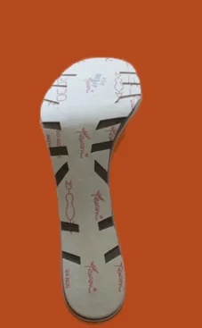
08Chiedete il sottopiede: Per sandalo con incastri a ragno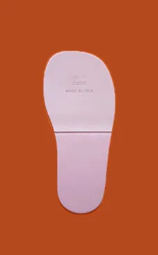
09Chiedete il sottopiede: Per bambino in soffice lattice
Toccate un tipo: lo trovate già scelto nella richiesta di campionatura.
Quattro reparti sotto lo stesso tetto
Dalla scelta del materiale alla consegna, ogni passaggio si fa da noi, a Villatora.
-
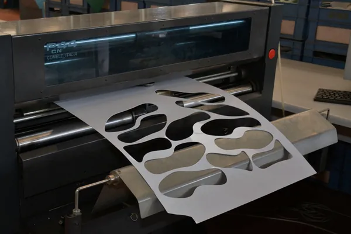
01
Studio modelleria
La progettazione parte dalle caratteristiche della forma del modello: la sagoma della parte inferiore, le curvature. Modelli, prototipi e campioni nascono con i programmi CAD/CAM per calzature.
-
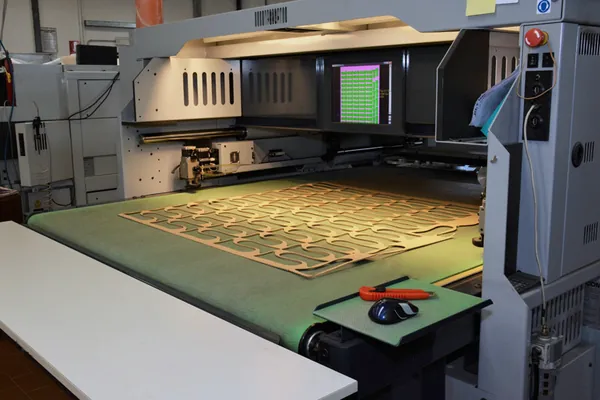
02
Lavorazione automatizzata
Le trance CAD/CAM computerizzate tagliano ogni singolo pezzo. Il taglio a punzone e la lama oscillante danno alta produttività e flessibilità.
-
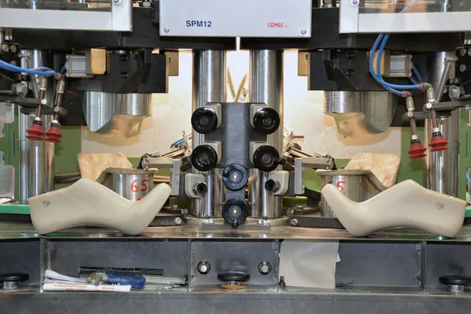
03
Cambratura
Macchinari automatici e numerosi stampi per le varie sagomature ci permettono garbature perfette e precise.
-
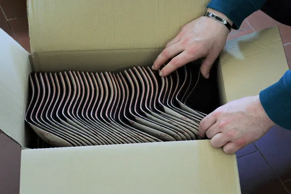
04
Supervisione
Il controllo minuzioso dei prodotti prima della consegna ai clienti.
Le macchine nelle foto dei reparti
- Comelz CN
- plotter della modelleria
- Comelz CM44S
- tranciatrice CAD/CAM
- Comec SPM12
- pressa per la cambratura
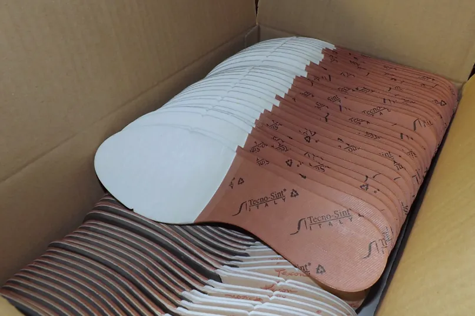
Dal 1970, a conduzione familiare
Ogni sottopiede è garbato in modo progressivo, in modo da evitare la formazione di grinze.
La nostra azienda nasce come piccola realtà a conduzione familiare. Uniamo la tradizione artigianale e l’alta tecnologia della nostra struttura. I prodotti sono controllati minuziosamente dal personale e dai titolari prima di essere consegnati ai clienti, rigorosamente Made in Italy.
Richiesta di campionatura
Scriveteci il tipo, il materiale, la numerata e le quantità. Per la forma o il file del modello, chiedeteci al telefono come mandarli.
- Telefono
- +39 049 640620
- info@tollin.it
Dove siamo
Via Irpinia 15, Zona Artigianale35020 Villatora di Saonara (PD) Indicazioni
- Orari
- Per ritiri e consegne chiamate prima di passare.
- Consegne
- Con il nostro furgone: una consegna puntuale in tempi rapidi.
- Fax
- 049 644643
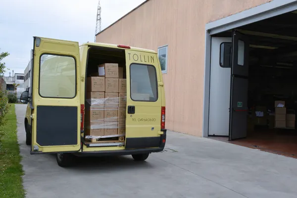